pacman::p_load(ggstatsplot, tidyverse,
nortest, ggdist)Hands-on Exercise 4b: Visualising Statistical Analysis
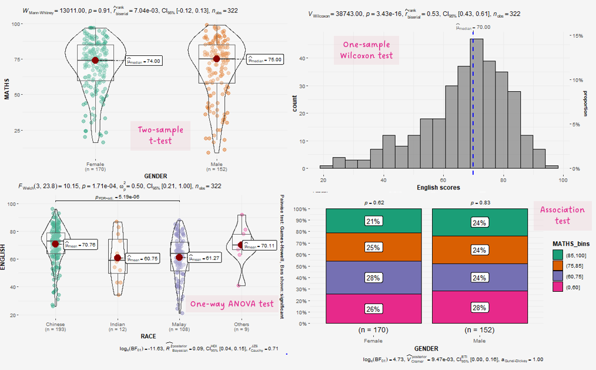
1 Learning Outcome
In this hands-on exercise, you will gain hands-on experience on using:
ggstatsplot package to create visual graphics with rich statistical information,
performance package to visualise model diagnostics, and
parameters package to visualise model parameters
2 Getting Started
Use the pacman package to check, install and launch the R packages ggstatplot and tidyverse.
ggstatsplot is an extension of ggplot2 package for creating graphics with details from statistical tests included in the information-rich plots themselves.
In this section, Exam_data.csv provided will be used. Using read_csv() of readr package, import Exam_data.csv into R.
The code chunk below read_csv() of readr package is used to import Exam_data.csv data file into R and save it as an tibble data frame called exam_data.
exam <- read_csv("data/Exam_data.csv")The data is a tibble dataframe and contains 322 observations across 7 attributes.
# A tibble: 5 × 7
ID CLASS GENDER RACE ENGLISH MATHS SCIENCE
<chr> <chr> <chr> <chr> <dbl> <dbl> <dbl>
1 Student321 3I Male Malay 21 9 15
2 Student305 3I Female Malay 24 22 16
3 Student289 3H Male Chinese 26 16 16
4 Student227 3F Male Chinese 27 77 31
5 Student318 3I Male Malay 27 11 25glimpse(exam)Rows: 322
Columns: 7
$ ID <chr> "Student321", "Student305", "Student289", "Student227", "Stude…
$ CLASS <chr> "3I", "3I", "3H", "3F", "3I", "3I", "3I", "3I", "3I", "3H", "3…
$ GENDER <chr> "Male", "Female", "Male", "Male", "Male", "Female", "Male", "M…
$ RACE <chr> "Malay", "Malay", "Chinese", "Chinese", "Malay", "Malay", "Chi…
$ ENGLISH <dbl> 21, 24, 26, 27, 27, 31, 31, 31, 33, 34, 34, 36, 36, 36, 37, 38…
$ MATHS <dbl> 9, 22, 16, 77, 11, 16, 21, 18, 19, 49, 39, 35, 23, 36, 49, 30,…
$ SCIENCE <dbl> 15, 16, 16, 31, 25, 16, 25, 27, 15, 37, 42, 22, 32, 36, 35, 45…summary(exam) ID CLASS GENDER RACE
Length:322 Length:322 Length:322 Length:322
Class :character Class :character Class :character Class :character
Mode :character Mode :character Mode :character Mode :character
ENGLISH MATHS SCIENCE
Min. :21.00 Min. : 9.00 Min. :15.00
1st Qu.:59.00 1st Qu.:58.00 1st Qu.:49.25
Median :70.00 Median :74.00 Median :65.00
Mean :67.18 Mean :69.33 Mean :61.16
3rd Qu.:78.00 3rd Qu.:85.00 3rd Qu.:74.75
Max. :96.00 Max. :99.00 Max. :96.00 col <- c("CLASS", "GENDER", "RACE")
exam <- exam %>%
mutate(across(col, as.factor)) %>%
mutate(ID = as.character(ID))3 Tests
3.1 One-sample test: gghistostats() method
In the code chunk below, gghistostats() is used to to build an visual of one-sample test on English scores.
A one-sample test is a statistical hypothesis test used to determine whether the mean of a single sample of data differs significantly from a known or hypothesized value.
It is a statistical test that compares the mean of a sample to a specified value, such as a population mean, to see if there is enough evidence to reject the null hypothesis that the sample comes from a population with the specified mean.
H0: EL average score is 60.
set.seed(1234)
gghistostats(
data = exam,
x = ENGLISH,
type = "bayes",
test.value = 60, #<< H0: EL = 60
xlab = "English scores"
) +
theme_classic() +
theme(plot.background = element_rect(fill = "#f5f5f5", color = "#f5f2f5"),
legend.background = element_rect(fill="#f5f5f5"),
panel.background = element_rect(fill="#f5f5f5")) 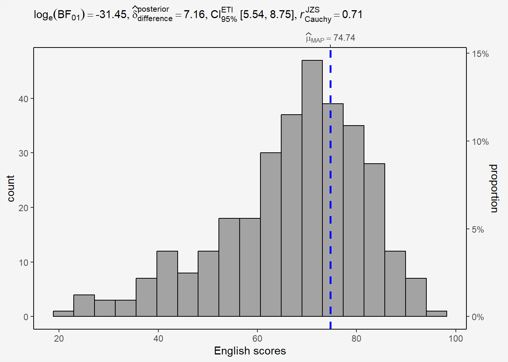
3.1.1 Bayes Factor
A Bayes factor is the ratio of the likelihood of one particular hypothesis to the likelihood of another. It can be interpreted as a measure of the strength of evidence in favor of one theory among two competing theories.
That’s because the Bayes factor gives us a way to evaluate the data in favor of a null hypothesis, and to use external information to do so. It tells us what the weight of the evidence is in favor of a given hypothesis.
When we are comparing two hypotheses, H1 (the alternate hypothesis) and H0 (the null hypothesis), the Bayes Factor is often written as B10.
The Schwarz criterion is one of the easiest ways to calculate rough approximation of the Bayes Factor.
How to interpret Bayes Factor
A Bayes Factor can be any positive number.
3.1.2 Perform a one-sample wilcoxon test
Reference website from r-bloggers
The one-sample Wilcoxon test (non parametric) will tell us whether the scores are significantly different from 60 or not (and thus whether they are different from 60 in the population or not)
H0: EL scores = 60
H1: EL scores != 60
The scores are assumed to be independent (a student’s score is not impacted or influenced by the score of another student)
wilcox.test(exam$ENGLISH,
mu = 60)
Wilcoxon signed rank test with continuity correction
data: exam$ENGLISH
V = 38743, p-value = 3.435e-16
alternative hypothesis: true location is not equal to 60Interpretation
P-value<0.05, we have enough statistical evidence to reject the null hypothesis and conclude that the EL scores are significantly different from 60.
By default, it is a two-tailed test that is done. As for the t.test() function, we can specify that a one-sided test is required by using either the alternative = "greater" or alternative = "less" argument in the wilcox.test() function.
Combine statistical test and plot
set.seed(1234)
gghistostats(data=exam,
x = ENGLISH,
type='nonparametric', #nonparametric (median) = Wilcoxon, parametric = t-test (default is look for mean and unequal variance method)
test.value =60,
conf.level = 0.95,
xlab = 'English scores') +
theme(plot.background = element_rect(fill = "#f5f5f5", color = "#f5f2f5"),
legend.background = element_rect(fill="#f5f5f5"),
panel.background = element_rect(fill="#f5f5f5")) 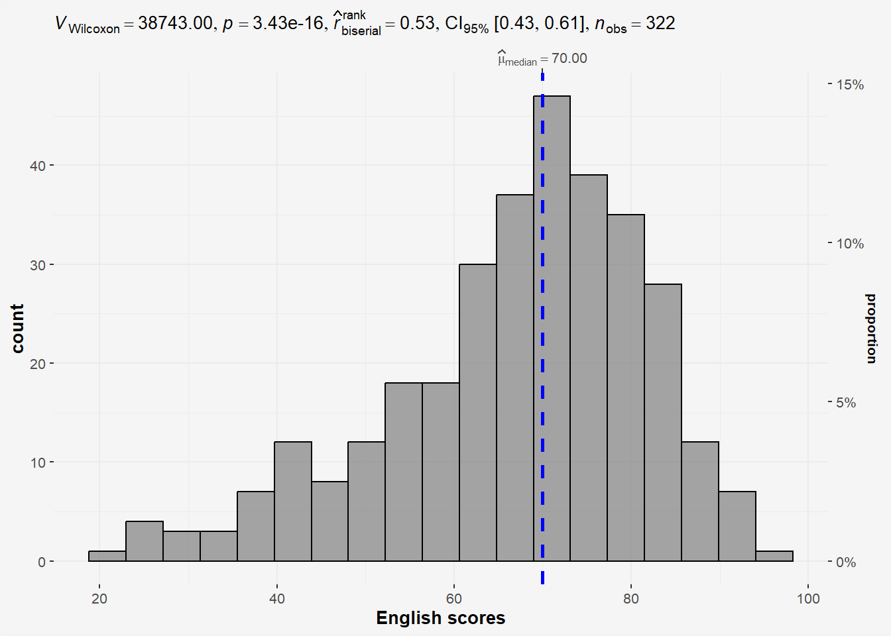
Did we forget to check if English scores follow a normal distribution? Use ad.test from nortest library.
H0: EL scores follows normal distribution
H1: EL scores do not follow normal distribution.
ad.test(exam$ENGLISH)
Anderson-Darling normality test
data: exam$ENGLISH
A = 4.3661, p-value = 7.341e-11Results from the Anderson-Darling normality test shows enough statistical evidence to reject the null hypothesis and conclude that the EL scores do not follow normal distribution . Thus the use of non parametric test is correct.
On Parametric and Non-parametric types
type= parametric: default look for mean and assumes unequal variance method
type = Non parametric: student-t test and use median (not mean!!)
3.2 Two-sample mean test: ggbetweenstats()
In the code chunk below, ggbetweenstats() is used to build a visual for two-sample mean test of Maths scores by gender (independent).
H0: Mean of F and M Math scores are the same.
H1: Mean of F and M Math scores are not the same.
ggbetweenstats(data=exam,
x=GENDER,
y=MATHS,
type='np', #<< Non-parametric
messages=FALSE) +
theme(plot.background = element_rect(fill = "#f5f5f5", color = "#f5f2f5"),
legend.background = element_rect(fill="#f5f5f5"),
panel.background = element_rect(fill="#f5f5f5")) 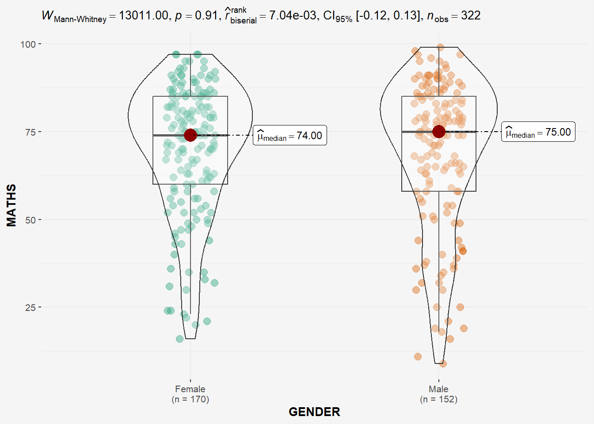
Since p-value > 0.05, we do not have enough statistical evidence to reject the null hypothesis that mean of Math scores of both gender are the same.
However, if we check for normality of Math scores of each gender.
# Perform Shapiro-Wilk test on math scores by gender
shapiro_test <- by(exam$MATHS, exam$GENDER, shapiro.test)
# Extract p-values
p_values <- sapply(shapiro_test, function(x) x$p.value)
# Print results
print(p_values) Female Male
1.603536e-07 6.268520e-08 The by() function is used to apply a function to subsets of a data frame or vector split by one or more factors. In the above code, we use by() to split the math_score column by gender, and apply the shapiro.test() function to each group.
H0: Math scores by gender follows normal distribution.
H1: Math scores by gender do not follow normal distribution.
From the Shapiro-Wilk test results, we have enough statistical evidence to reject the null hypothesis and conclude that the Math scores by gender does not follow a normal distribution. Thus the use of ‘np’ is appropriate.
3.3 One-way ANOVA Test: ggbetweenstats() method
In the code chunk below, ggbetweenstats() is used to build a visual for One-way ANOVA test on English score by race (Independent 4 sample mean).
ggbetweenstats(
data = exam,
x = RACE,
y = ENGLISH,
type = "p",
mean.ci=TRUE,
pairwise.comparisons = TRUE,
pairwise.display = "s", # 'ns': shows only non-sig, 's': shows only sig, 'all': both
p.adjust.method = "fdr",
messages = FALSE
) +
theme(plot.background = element_rect(fill = "#f5f5f5", color = "#f5f2f5"),
legend.background = element_rect(fill="#f5f5f5"),
panel.background = element_rect(fill="#f5f5f5")) 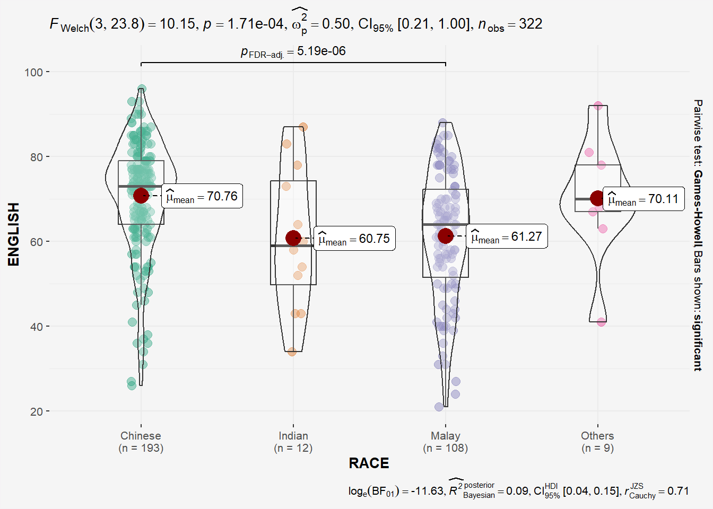
## might need to call library(PMCMRplus) and library(rstantools) if this code chunck doesnt work.Since p-value < 0.05, we have enough statistical evidence to reject the null hypothesis and conclude that NOT ALL means of EL scores by race are the same. The results shows that the means of EL scores of Chinese, Indian and Malay are significantly different. This is also highlighted in the bracket at the top of the plot!
Once again, lets go backwards and confirm that the distribution of EL scores by RACE conforms to normal distribution.
# Perform Shapiro-Wilk test on math scores by gender
shapiro_test <- by(exam$ENGLISH, exam$RACE, shapiro.test)
# Extract p-values
p_values <- sapply(shapiro_test, function(x) x$p.value)
# Print results
print(p_values) Chinese Indian Malay Others
1.305153e-07 8.482600e-01 1.251020e-02 5.181740e-01 H0: EL scores by Race follow normal distribution.
H1: EL scores by Race do not follow normal distribution.
The results of the Shapiro-Wilk test shows p_value of all EL score distribution by race follows normal distribution.
3.3.1 ggbetweenstats - Summary of tests
Type argument entered by us will determine the centrality tendency measure displayed
mean for parametric statistics
median for non-parametric statistics
trimmed mean for robust statistics
MAP estimator for Bayesian statistics
3.4 Significant Test of Correlation: ggscatterstats()
Earlier, we have checked that EL scores do not follow a normal distribution. Now we will do the same for Math scores.
ad.test(exam$MATHS)
Anderson-Darling normality test
data: exam$MATHS
A = 7.9125, p-value < 2.2e-16Since the p-value < 0.05, we have enough statistical evidence to reject the null hypothesis and conclude that the Math scores also do not follow normal distribution.
In the code chunk below, ggscatterstats() is used to build a visual for Significant Test of Correlation between Maths scores and English scores.
ggscatterstats(
data = exam,
x = MATHS,
y = ENGLISH,
type='nonparametric', # 'parametric', 'robust', 'bayes'
marginal = FALSE,
) +
theme(plot.background = element_rect(fill = "#f5f5f5", color = "#f5f2f5"),
legend.background = element_rect(fill="#f5f5f5"),
panel.background = element_rect(fill="#f5f5f5")) 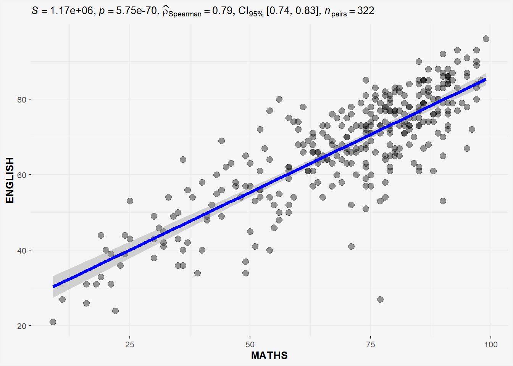
The plot above uses type = “non-parametric” as both Math and EL scores do not follow normal distribution.
3.5 Significant Test of Association (Dependence) : ggbarstats() methods
In the code chunk below, the Maths scores is binned into a 4-class variable by using cut().
We will create a new dataframe exam1 similar to exam df but with extra column called ‘MATHS_bins’.
exam1 <- exam %>%
mutate(MATHS_bins =
cut(MATHS,
breaks = c(0,60,75,85,100))
)exam1# A tibble: 322 × 8
ID CLASS GENDER RACE ENGLISH MATHS SCIENCE MATHS_bins
<chr> <fct> <fct> <fct> <dbl> <dbl> <dbl> <fct>
1 Student321 3I Male Malay 21 9 15 (0,60]
2 Student305 3I Female Malay 24 22 16 (0,60]
3 Student289 3H Male Chinese 26 16 16 (0,60]
4 Student227 3F Male Chinese 27 77 31 (75,85]
5 Student318 3I Male Malay 27 11 25 (0,60]
6 Student306 3I Female Malay 31 16 16 (0,60]
7 Student313 3I Male Chinese 31 21 25 (0,60]
8 Student316 3I Male Malay 31 18 27 (0,60]
9 Student312 3I Male Malay 33 19 15 (0,60]
10 Student297 3H Male Indian 34 49 37 (0,60]
# ℹ 312 more rowsIn this code chunk below ggbarstats() is used to build a visual for Significant Test of Association (2 categorical variables).
H0: There is no association between math_bin and gender.
H1: There is an association between math_bin and gender.
ggbarstats(exam1,
x=MATHS_bins,
y=GENDER) +
theme(plot.background = element_rect(fill = "#f5f5f5", color = "#f5f5f5"),
legend.background = element_rect(fill="#f5f5f5"),
panel.background = element_rect(fill="#f5f5f5")) 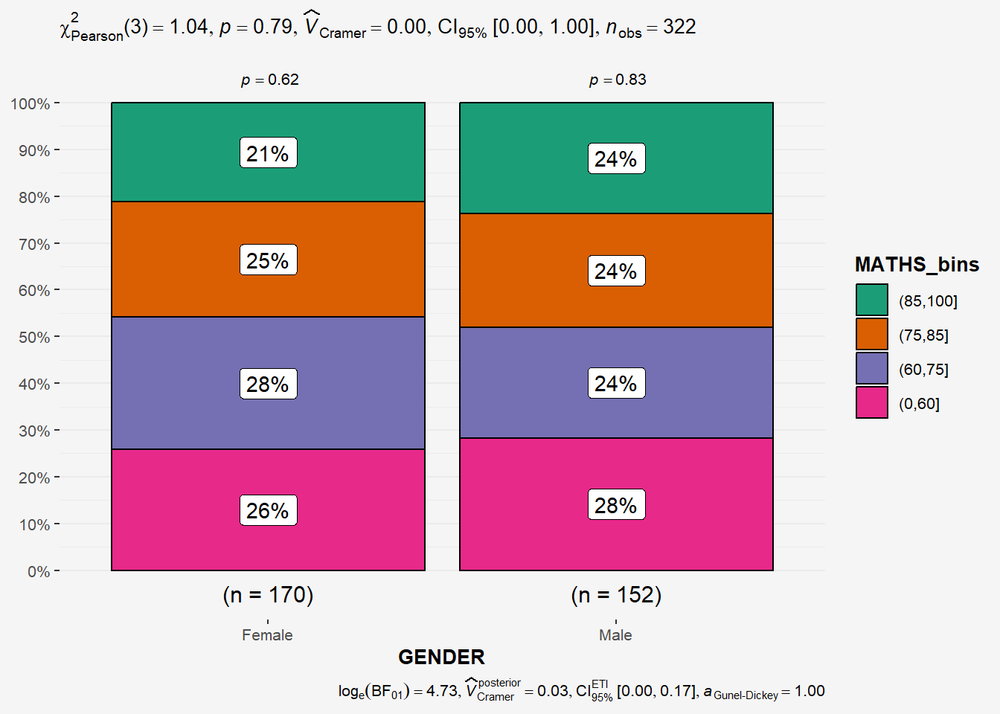
From the results above , p-value > 0.05 thus we have not enough statistical evidence to reject the null hypothesis that there is not association between the math_bin and gender variables.
4 Visualising Models
In this section, I will learn how to visualise model diagnostic and model parameters by using parameters package.
Toyota Corolla case study will be used. The purpose of study is to build a model to discover factors affecting prices of used-cars by taking into consideration a set of explanatory variables.
4.1 Getting Started
pacman::p_load(readxl, performance, parameters, see)Importing Excel file: readxl methods
In the code chunk below, read_xls() of readxl package is used to import the data worksheet of ToyotaCorolla.xls workbook into R.
car_resale <- read_xls('data/ToyotaCorolla.xls',
sheet='data')glimpse(car_resale)Rows: 1,436
Columns: 38
$ Id <dbl> 1, 2, 3, 4, 5, 6, 7, 8, 9, 10, 11, 12, 13, 14, 15, 16…
$ Model <chr> "TOYOTA Corolla 2.0 D4D HATCHB TERRA 2/3-Doors", "TOY…
$ Price <dbl> 13500, 13750, 13950, 14950, 13750, 12950, 16900, 1860…
$ Age_08_04 <dbl> 23, 23, 24, 26, 30, 32, 27, 30, 27, 23, 25, 22, 25, 3…
$ Mfg_Month <dbl> 10, 10, 9, 7, 3, 1, 6, 3, 6, 10, 8, 11, 8, 2, 1, 5, 3…
$ Mfg_Year <dbl> 2002, 2002, 2002, 2002, 2002, 2002, 2002, 2002, 2002,…
$ KM <dbl> 46986, 72937, 41711, 48000, 38500, 61000, 94612, 7588…
$ Fuel_Type <chr> "Diesel", "Diesel", "Diesel", "Diesel", "Diesel", "Di…
$ HP <dbl> 90, 90, 90, 90, 90, 90, 90, 90, 192, 69, 192, 192, 19…
$ Met_Color <dbl> 1, 1, 1, 0, 0, 0, 1, 1, 0, 0, 0, 0, 0, 1, 1, 0, 1, 1,…
$ Color <chr> "Blue", "Silver", "Blue", "Black", "Black", "White", …
$ Automatic <dbl> 0, 0, 0, 0, 0, 0, 0, 0, 0, 0, 0, 0, 0, 0, 0, 0, 0, 0,…
$ CC <dbl> 2000, 2000, 2000, 2000, 2000, 2000, 2000, 2000, 1800,…
$ Doors <dbl> 3, 3, 3, 3, 3, 3, 3, 3, 3, 3, 3, 3, 3, 3, 3, 3, 3, 3,…
$ Cylinders <dbl> 4, 4, 4, 4, 4, 4, 4, 4, 4, 4, 4, 4, 4, 4, 4, 4, 4, 4,…
$ Gears <dbl> 5, 5, 5, 5, 5, 5, 5, 5, 5, 5, 6, 6, 6, 6, 6, 6, 5, 5,…
$ Quarterly_Tax <dbl> 210, 210, 210, 210, 210, 210, 210, 210, 100, 185, 100…
$ Weight <dbl> 1165, 1165, 1165, 1165, 1170, 1170, 1245, 1245, 1185,…
$ Mfr_Guarantee <dbl> 0, 0, 1, 1, 1, 0, 0, 1, 0, 0, 1, 1, 1, 1, 1, 0, 0, 0,…
$ BOVAG_Guarantee <dbl> 1, 1, 1, 1, 1, 1, 1, 1, 1, 1, 1, 1, 1, 1, 1, 1, 1, 0,…
$ Guarantee_Period <dbl> 3, 3, 3, 3, 3, 3, 3, 3, 3, 3, 12, 3, 3, 3, 3, 3, 3, 1…
$ ABS <dbl> 1, 1, 1, 1, 1, 1, 1, 1, 1, 1, 1, 1, 1, 1, 1, 1, 1, 1,…
$ Airbag_1 <dbl> 1, 1, 1, 1, 1, 1, 1, 1, 1, 1, 1, 1, 1, 1, 1, 1, 1, 1,…
$ Airbag_2 <dbl> 1, 1, 1, 1, 1, 1, 1, 1, 0, 1, 1, 1, 1, 1, 1, 1, 1, 0,…
$ Airco <dbl> 0, 1, 0, 0, 1, 1, 1, 1, 1, 1, 1, 1, 1, 1, 1, 1, 1, 1,…
$ Automatic_airco <dbl> 0, 0, 0, 0, 0, 0, 0, 0, 0, 0, 1, 1, 1, 1, 1, 1, 1, 0,…
$ Boardcomputer <dbl> 1, 1, 1, 1, 1, 1, 1, 1, 0, 1, 0, 1, 1, 1, 1, 1, 1, 0,…
$ CD_Player <dbl> 0, 1, 0, 0, 0, 0, 0, 1, 0, 0, 1, 0, 0, 1, 1, 0, 1, 0,…
$ Central_Lock <dbl> 1, 1, 0, 0, 1, 1, 1, 1, 1, 0, 1, 1, 1, 1, 1, 1, 1, 1,…
$ Powered_Windows <dbl> 1, 0, 0, 0, 1, 1, 1, 1, 1, 0, 1, 1, 1, 1, 1, 1, 1, 1,…
$ Power_Steering <dbl> 1, 1, 1, 1, 1, 1, 1, 1, 1, 1, 1, 1, 1, 1, 1, 1, 1, 1,…
$ Radio <dbl> 0, 0, 0, 0, 0, 0, 0, 0, 1, 0, 0, 0, 0, 0, 0, 0, 0, 1,…
$ Mistlamps <dbl> 0, 0, 0, 0, 1, 1, 0, 0, 0, 0, 0, 1, 1, 1, 1, 1, 1, 0,…
$ Sport_Model <dbl> 0, 0, 0, 0, 0, 0, 1, 0, 0, 0, 0, 1, 1, 1, 1, 1, 0, 0,…
$ Backseat_Divider <dbl> 1, 1, 1, 1, 1, 1, 1, 1, 0, 1, 0, 1, 1, 1, 1, 1, 1, 0,…
$ Metallic_Rim <dbl> 0, 0, 0, 0, 0, 0, 0, 0, 1, 0, 1, 1, 1, 1, 1, 1, 1, 0,…
$ Radio_cassette <dbl> 0, 0, 0, 0, 0, 0, 0, 0, 1, 0, 0, 0, 0, 0, 0, 0, 0, 1,…
$ Tow_Bar <dbl> 0, 0, 0, 0, 0, 0, 0, 0, 0, 0, 0, 0, 0, 0, 0, 0, 0, 1,…Notice that the output object car_resale is a tibble data frame.
4.2 Multiple Regression Model using lm()
The code chunk below is used to calibrate a multiple linear regression model by using lm() of Base Stats of R.
model <- lm(Price ~ Age_08_04 +
Mfg_Year +
KM +
Weight +
Guarantee_Period,
data=car_resale)
model
Call:
lm(formula = Price ~ Age_08_04 + Mfg_Year + KM + Weight + Guarantee_Period,
data = car_resale)
Coefficients:
(Intercept) Age_08_04 Mfg_Year KM
-2.637e+06 -1.409e+01 1.315e+03 -2.323e-02
Weight Guarantee_Period
1.903e+01 2.770e+01 4.3 Model Diagnostic: checking for multicolinearity
In the code chunk, check_collinearity() of performance package.
check_collinearity(model)# Check for Multicollinearity
Low Correlation
Term VIF VIF 95% CI Increased SE Tolerance Tolerance 95% CI
KM 1.46 [ 1.37, 1.57] 1.21 0.68 [0.64, 0.73]
Weight 1.41 [ 1.32, 1.51] 1.19 0.71 [0.66, 0.76]
Guarantee_Period 1.04 [ 1.01, 1.17] 1.02 0.97 [0.86, 0.99]
High Correlation
Term VIF VIF 95% CI Increased SE Tolerance Tolerance 95% CI
Age_08_04 31.07 [28.08, 34.38] 5.57 0.03 [0.03, 0.04]
Mfg_Year 31.16 [28.16, 34.48] 5.58 0.03 [0.03, 0.04]check_c <- check_collinearity(model)
plot(check_c) +
theme(plot.background = element_rect(fill = "#f5f5f5", color = "#f5f2f5"),
legend.background = element_rect(fill="#f5f5f5"),
panel.background = element_rect(fill="#f5f5f5")) 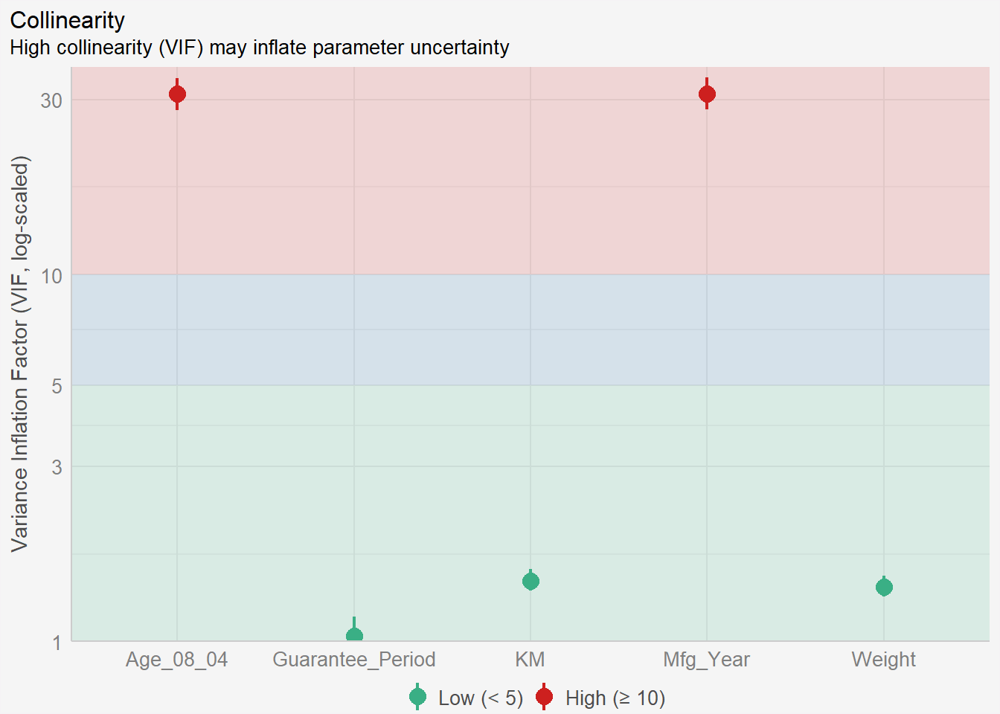
We can see high collinearity between Age and Mfg_Year. One is derived from the other. We should remove one of them and repeat muliti collinearity check again for the new model.
4.4 Model Diagnostic: checking normality assumption
In the code chunk, check_normality() of performance package.
Notice that the Mfg_Year variable has been removed from the independent variables list.
model1 <- lm(Price ~ Age_08_04 +
#Mfg_Year + #<<
KM +
Weight +
Guarantee_Period,
data=car_resale)check_c1 <- check_collinearity(model1)
plot(check_c1) +
theme(plot.background = element_rect(fill = "#f5f5f5", color = "#f5f2f5"),
legend.background = element_rect(fill="#f5f5f5"),
panel.background = element_rect(fill="#f5f5f5")) 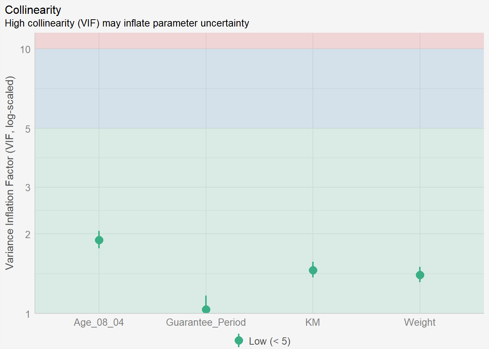
check_n <- check_normality(model1)plot(check_n) +
theme(plot.background = element_rect(fill = "#f5f5f5", color = "#f5f2f5"),
legend.background = element_rect(fill="#f5f5f5"),
panel.background = element_rect(fill="#f5f5f5")) 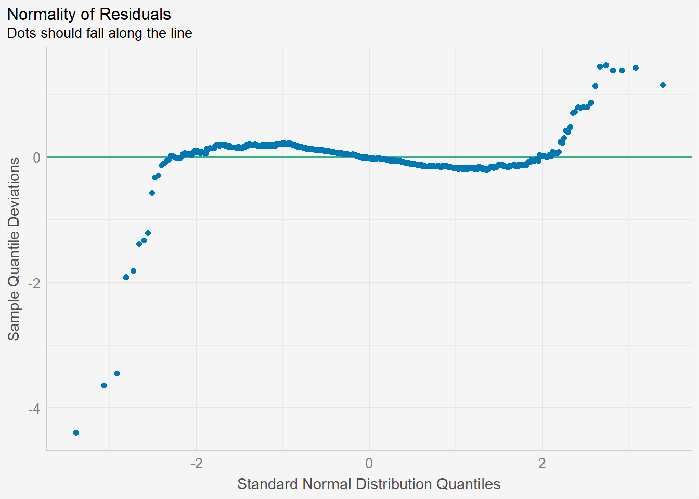
Recap: Assumptions of linear regression
In linear regression, one of the key assumptions is that the residuals (the differences between the predicted values and the actual values) are normally distributed. The normality assumption is important because it affects the validity of statistical inference procedures such as hypothesis testing and confidence intervals.
If the residuals are not normally distributed, it may indicate that the linear regression model is not a good fit for the data and that alternative modeling approaches may be needed.
4.5 Model Diagnostic: Check model for homogeneity of variances
In the code chunk, check_heteroscedasticity() of performance package.
Heteroscedasticity refers to a situation where the variance of the errors (or residuals) in the linear regression model is not constant across different levels of the predictor variable(s).
If heteroscedasticity is detected, there are several ways to address it, including transforming the data, using weighted least squares regression, or using robust standard errors. In DAl, we rebuild another model by creating subclasses out of the original Y variable.
check_h <- check_heteroscedasticity(model1)plot(check_h) +
theme(plot.background = element_rect(fill = "#f5f5f5", color = "#f5f2f5"),
legend.background = element_rect(fill="#f5f5f5"),
panel.background = element_rect(fill="#f5f5f5")) 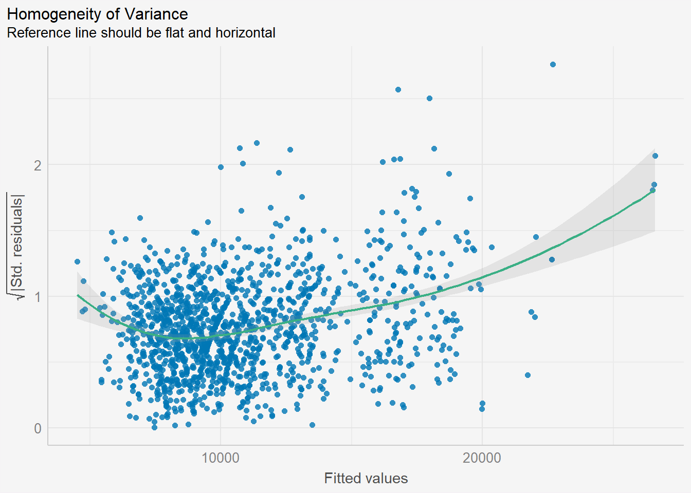
From the graph above, there is a slight sign of heteroscedasticity as the residuals seem to be funnelled outwards as the fitted values increase.
4.6 Model Diagnostic: Complete check
We can also perform the complete check by using check_model().
check_model(model1)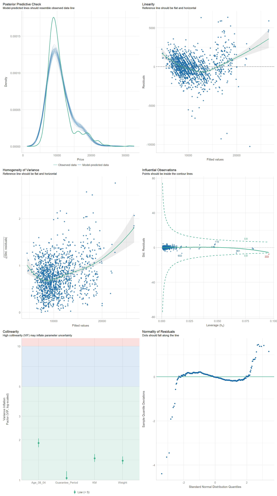
4.7 Visualising Regression Parameters: see() methods
In the code below, plot() of see package and parameters() of parameters package are used to visualise the parameters of a regression model.
plot(parameters(model1)) +
theme(plot.background = element_rect(fill = "#f5f5f5", color = "#f5f2f5"),
legend.background = element_rect(fill="#f5f5f5"),
panel.background = element_rect(fill="#f5f5f5")) 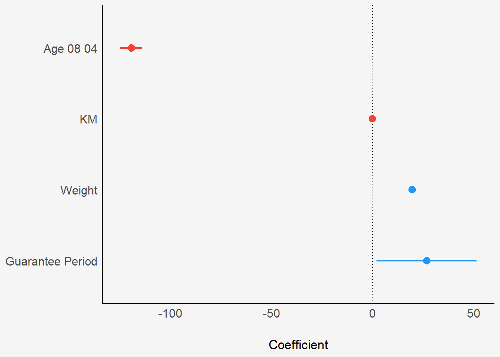
4.8 Visualising Regression Parameters: ggcoefstats() methods
In the code below, ggcoefstats() of ggstatsplot package to visualise the parameters of a regression model.
ggcoefstats(model1,
output = "plot") +
theme(plot.background = element_rect(fill = "#f5f5f5", color = "#f5f2f5"),
legend.background = element_rect(fill="#f5f5f5"),
panel.background = element_rect(fill="#f5f5f5")) 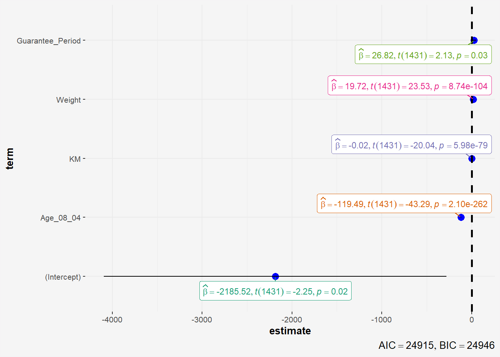
5 Reference
- Kam, T.S. (2023). Visual Statistical Analysis.